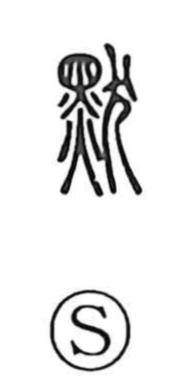

黙

Kun: damaru | On: moku
to be silent ・ silence ・ quiet
Explanation
A phono-semantic character: the upper element 黑 (black) serves as the phonetic, as in 墨 (“ink”), while the lower 犬 (dog) points to a dog interred as a sacrificial offering at the opening of mourning. In that ritual context speech was taboo, and silence was strictly observed. Classical records relate that King Wuding kept silent for three years in mourning, and the Guoyu likewise urges three years of quiet reflection on the Way. From these rites the graph came to mean falling silent, calm stillness, and keeping one’s tongue.